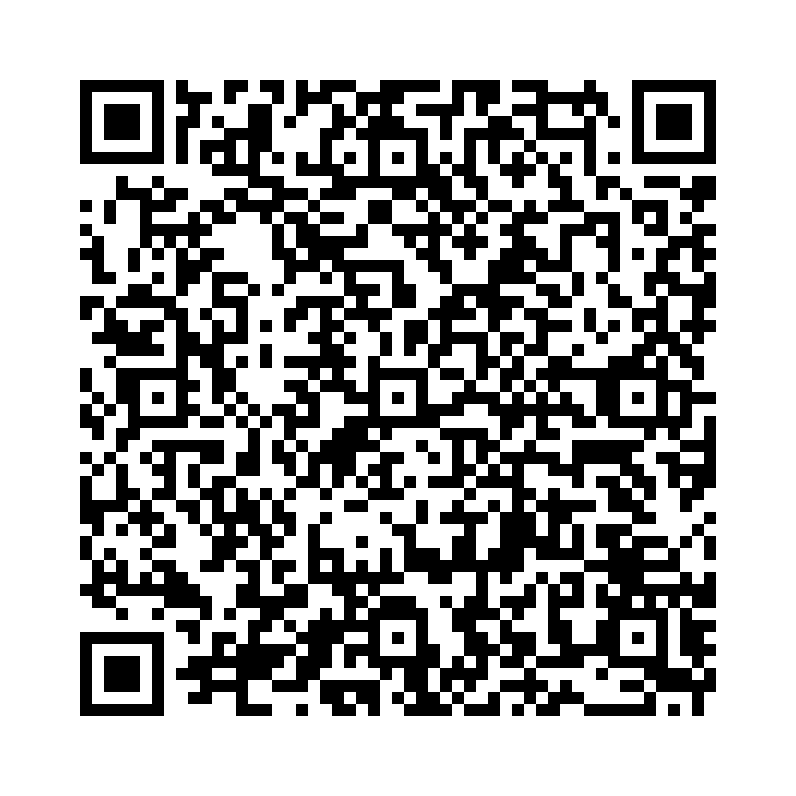

過去分詞も、名詞を後ろから修飾することができます。このとき、主語と動詞（過去分詞）を含む節が名詞を説明します。
和訳: 過去分詞は「～された」「～されている」という受け身の意味を持ち、主語が誰かに何かをされた内容を、名詞の後ろから説明できます。
次の語を正しい語順に並べ替えて、意味のある英文を完成させましょう。

問題1: (broken / was / window / the / by / wind / the) - その窓は風によって割られた窓は空いている。
解答: The window broken by the wind was open。
解説: 「broken by the wind」が名詞 window を後ろから修飾しています。「風によって割られた窓」。
問題2: (beautiful / taken / the / photo / a / park / in / was) - 公園で撮られた写真は美しい
解答: A photo taken in the park was beautiful。
解説: 「taken in the park」は「公園で撮られた」を意味し、「photo」を後ろから説明します。
問題3: (interesting / shown / picture / a / the / teacher / by / was) - 先生によって見せられた絵は面白い
解答: A picture shown by the teacher was interesting。
解説: 「shown by the teacher」で「先生によって見せられた」を示し、「picture」を説明します。
問題4: (ate / I / mother / my / made / a / cake / by) - 私は母によって作られたケーキを食べた
解答: I ate a cake made by my mother。
解説: 「made by my mother」は「母によって作られた」で、cake を説明します。
問題5: (colorful / drawn / was / child / picture / by / the) - 子供によって描かれた絵はカラフルです
解答: The picture drawn by the child was colorful。
解説: 「drawn by the child」で「子供によって描かれた」を意味し、「picture」を後ろから修飾します。